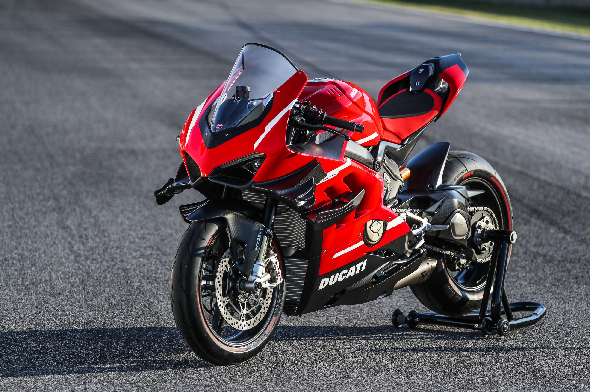

La beauté et la nervosité italienne réunit sur 2 roues. La Ducati Panigale V4 à tout pour plaire à un pilote de moto : Sa beauté, sa puissance, sa nervosité et j'en passe... Ses 4 cylindres disposés en V lui donne une puissance hors du commun. Elle développe une puissance de 215.5 ch à 13 000 tours/minute et un couple de près de 123.6 Nm à 9 500 tours/minute et 175 kg à sec pour la V4.
Mais la finesse et la puissance italienne ne s'arrête pas là, la version V4R de 2023 montre son côté pur sport d'une puissance de 218 ch à 15 500 tours/minute et un couple de près de 111.3 Nm à 12 000 tours/minute et 172 kg à sec
 Aller sur le site officiel de Ducati